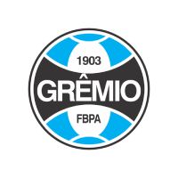

Grêmio
Último título: Grêmio 4x2 Atlético-MG
Título(s): 1989, 1994, 1997, 2001, 2016
Participações: 31 edições
O Grêmio Foot-ball Porto Alegrense é o segundo maior campeão da Copa do Brasil, totalizando cinco títulos, na atual
edição foi eliminado nas oitavas de final pelo Corinthians nos pênaltis após empatar sem gols nos dois jogos.